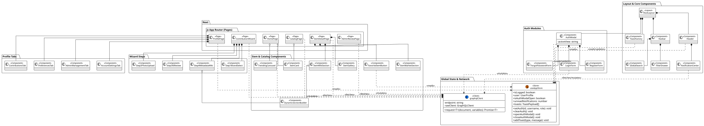
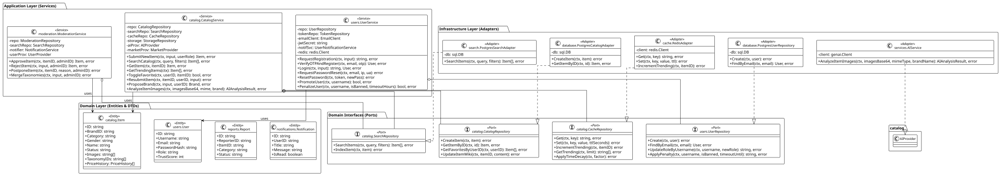

Trama Archive Documentation
An encyclopedic project and collaborative historical archive built on a strict API-First methodology, designed to decouple presentation from business logic for maximum scalability.
Business Scope & Roadmap
The platform is explicitly designed as a collaborative archive, not a native e-commerce store. It does not handle direct financial transactions, shopping carts, or shipping logistics.
- Phase 1 (Core - Active): Functions exclusively as an historical archive. The primary goal is to populate the relational database with high-quality data and build community loyalty through User Generated Content (UGC) and stringent moderation.
- Phase 2 (Monetization - Planned): Unlocks the commercial infrastructure via a Seller Dashboard. Subscribed sellers can sponsor their inventory and link available archival garments to their external stores, acting entirely as a lead generation bridge.
System Architecture & Network
Currently hosted on an optimized Homelab environment to minimize initial operational costs, the infrastructure is fully containerized and heavily segmented to ensure security, with a clear roadmap for cloud migration.
| Component | Technology | Architectural Role & Details |
|---|---|---|
| Edge Router | Traefik v3 | Intercepts traffic on ports 80/443, forces HTTPS redirection, and dynamically routes traffic using Docker Labels while managing automated ACME TLS certificates via Let's Encrypt. |
| DNS Management | Cloudflare | Operates in "DNS Only" (proxy disabled) to prevent TLS conflicts. A containerized DDNS worker synchronizes the dynamic public IP every 5 minutes. |
| Public Network | web_public |
Exposes the Next.js frontend and the single GraphQL API endpoint to the outside world via Traefik. |
| Private Network | trama_internal |
Completely isolates PostgreSQL and Redis containers. They expose no ports to the host and only accept incoming traffic directly from the Go backend. |
Frontend: Presentation & UX
The web client strictly separates Server State from Client State, utilizing Feature-Sliced Design to maximize perceived performance and SEO optimization.
- Framework: Built with Next.js (App Router) and TypeScript. It utilizes Server-Side Rendering (SSR) and Static Site Generation (SSG) for SEO-critical pages (like the Item Detail Page), applying Client-Side Hydration for dynamic user states.
- Styling: Tailwind CSS is used with a utility-first approach to minimize production bundle sizes.
- State Management: Zustand replaces Redux, utilizing the Slice Pattern (e.g.,
AuthSlice,ToastSlice) to manage ephemeral UI state without unnecessary component re-renders. - GraphQL Client: Network communications route through a central client that automatically injects JWT session tokens and acts as a global interceptor to gracefully downgrade users to Guests upon token expiration.
- Perceived UX: Heavy reliance on Optimistic UI for micro-actions (e.g., favoriting items immediately updates the UI while syncing in the background) and Skeleton Screens to eliminate Cumulative Layout Shift (CLS).

Figure 1: Frontend UML Class Diagram mapping Layout, Route Pages, and Zustand Store Slices.
Backend: Core Logic & Clean Architecture
The application server is a Modular Monolith developed in Go (Golang 1.26), chosen for its low memory footprint and native concurrency handling.
- Hexagonal Pattern (Ports & Adapters): The codebase separates Primary Adapters (the GraphQL HTTP handler), the Core Domain (business logic and use cases), and Secondary Adapters (infrastructure logic like Postgres and Redis drivers). The domain remains completely agnostic to external tools.
- CQRS Implementation: Command Query Responsibility Segregation is applied to separate data reads (often cached in RAM) from complex, transactional writes.
- Worker Pool Pattern: Limits the uncontrolled creation of goroutines, maintaining a fixed number of workers to process background tasks (like sending emails) and preventing CPU/RAM exhaustion during traffic spikes.
- Outbox Pattern: Ensures eventual consistency between the primary database and search indexing. Approved catalog items are written to an
outbox_eventstable, which a background worker polls every 5 seconds to sync with the search engine securely.

Figure 2: Backend Hexagonal Architecture mapping Handlers, Core Services, Ports, and Infrastructure Adapters.
Database & Storage
Data persistence and caching rely on highly specialized, isolated layers to handle structured data, high-frequency reads, and media assets.
- PostgreSQL 15: The primary relational database and Single Source of Truth. It enforces ACID compliance and handles complex taxonomy joins and user access control.
- Redis (Caching & Time Decay): Acts as an in-memory datastore to offload heavy GraphQL queries. It also powers the real-time "Trending Items" feature using Sorted Sets. A background Lua script runs daily to apply a Time Decay factor (multiplying scores by 0.85), ensuring only currently popular items remain visible.
- Cloudflare R2 (S3-Compatible): Stores all multimedia assets with zero egress costs. The backend generates temporary Presigned URLs (valid for 5 minutes), allowing the frontend to upload WebP-converted images directly to the cloud, entirely bypassing the backend bandwidth. Orphaned media is purged via asynchronous logical delete commands.
AI & Market Engine Integrations
The platform reduces user friction and enriches catalog data through asynchronous third-party API integrations.
- Google Gemini 3.6 Flash (AI Archivist): During the 4-step UGC Contribution Wizard, the frontend converts uploaded images to Base64. The Go backend injects these into a predefined "Fashion Archivist" prompt, forcing the multimodal AI to return a strict JSON payload that pre-fills the item's metadata (Name, Category, Gender, Season).
- eBay Browse API (Lazy Market Engine): To prevent UI blocking and conserve API quotas, market value estimation uses Lazy Evaluation. If an item's price history is missing or older than 7 days, a background goroutine queries the eBay API using the brand, name, and season, averages the top 10 results, and silently stores the calculated market value in PostgreSQL for future visitors.